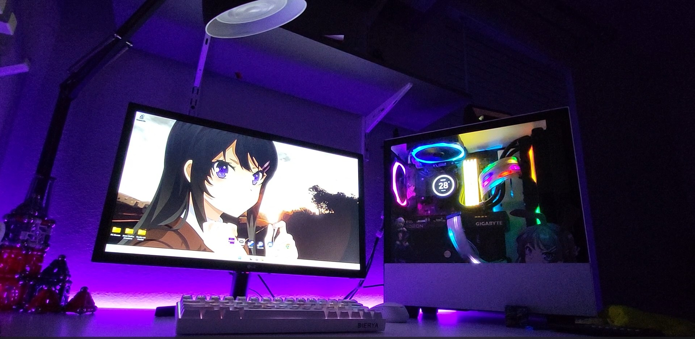
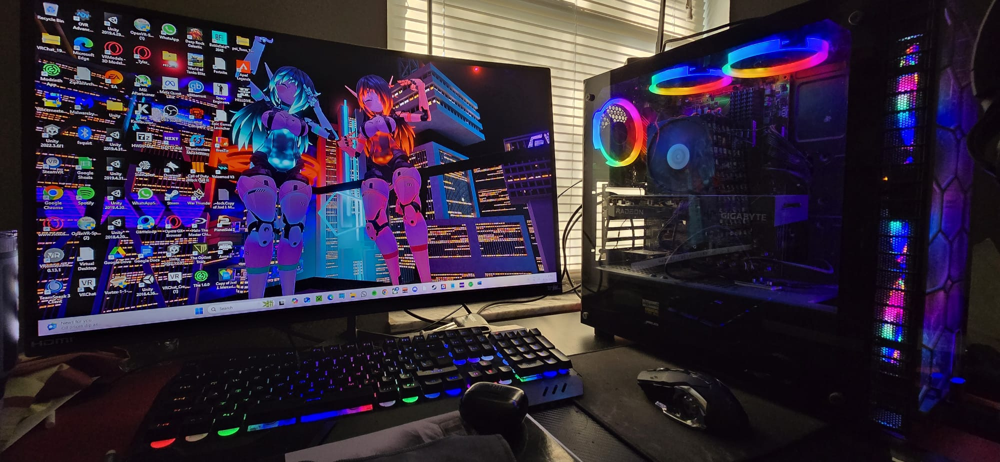
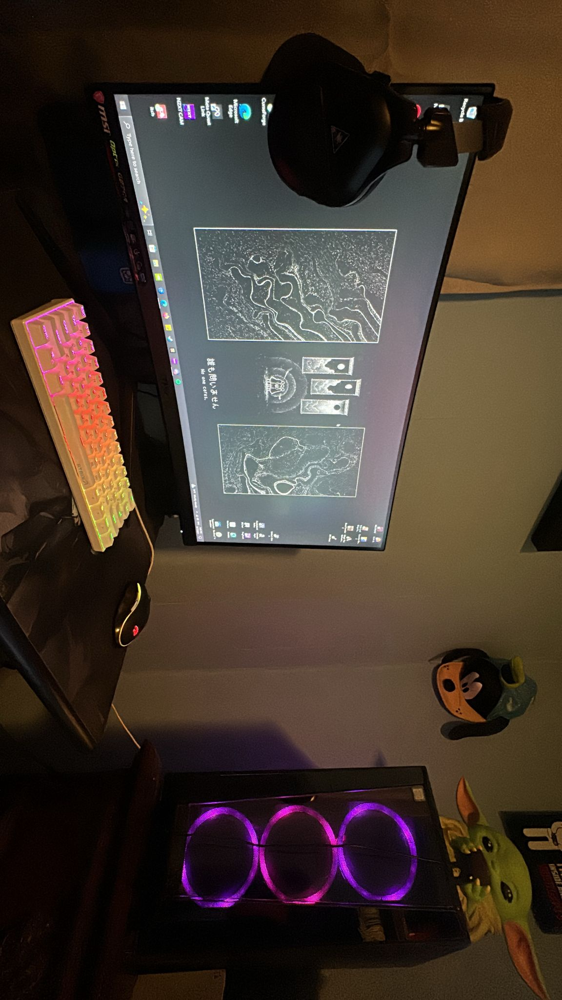

Gaming | Performance Computer
This computer was built in 2020 for a customer looking for powerful and affordable options to play computer games while maximizing hardware and software capabilities.
🔹 Tools & Skills
- Windows installer
- Hardware and Design Skills
- Budget Management & Prioritization
Additional Information
- Specs: Ryzen 5 5600x, 32 GB RAM, AMD 6600XT Graphics, KRAKEN water cooling unit
- Project Timeframe: 4 weeks
- Professional wiring & optimization
- Build Style: Gaming Open Case Style | Modular Construction

Virtual Reality | Research Computer
This system was built in 2021 for a client who needed a reliable and efficient computer to experiment with new virtual reality technology, as well as 3D modeling and programming software.
🔹 Tools & Skills
- Operating System & Software Installation
- Virtual Reality Hardware Configuration
- Cable Management & Thermal Design
Additional Information
- Specs: Ryzen 7 9700, RTX 3060 TI, 32 GB RAM, Fan Cooling System
- Project Timeframe: 2 months 2 weeks
- Professional Wiring and Optimization
- Build Style: Home Office | Modular Construction

Streaming | Multimedia Computer
Designed in 2023 for a content creator who required strong performance for video editing, graphic design, and streaming. Focus was placed on GPU power and high-speed storage.
🔹 Tools & Skills
- Adobe Suite Optimization
- High-speed SSD and RAID setup
- Performance Tuning & Stress Testing
Additional Information
- Specs: Intel i7 12700K, 32 GB RAM, NVIDIA RTX 3080, Dual NVMe 2TB SSDs
- Project Timeframe: 3 weeks
- Noise Reduction, AIO Water Cooling
- Build Style: Professional Tower | Silent fan configuration
